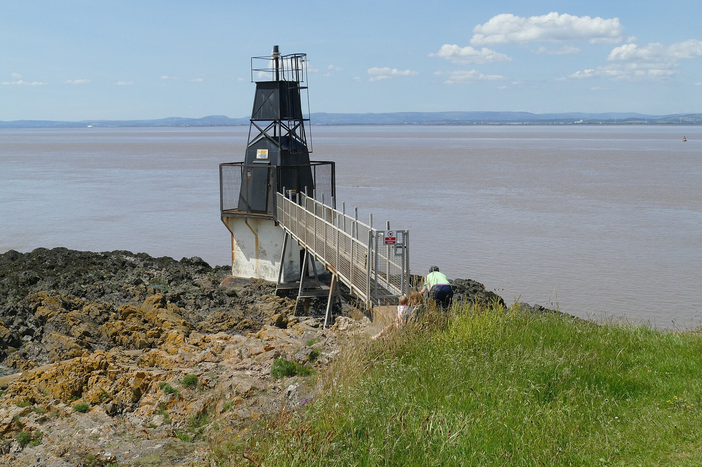
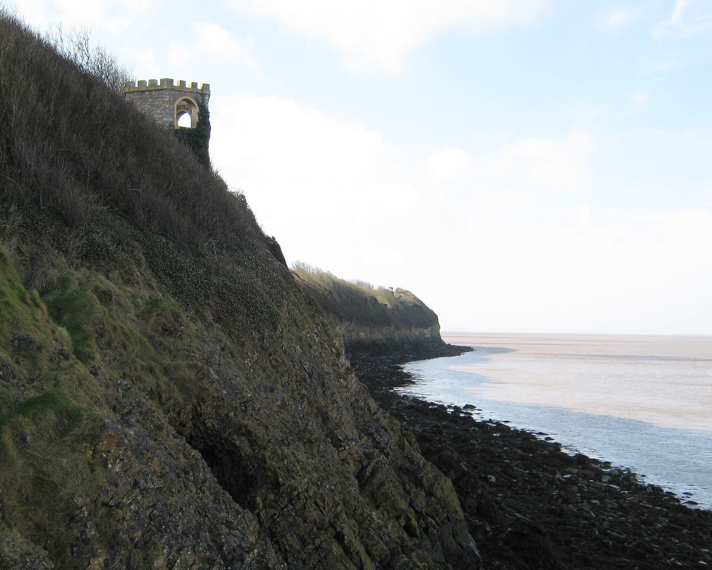
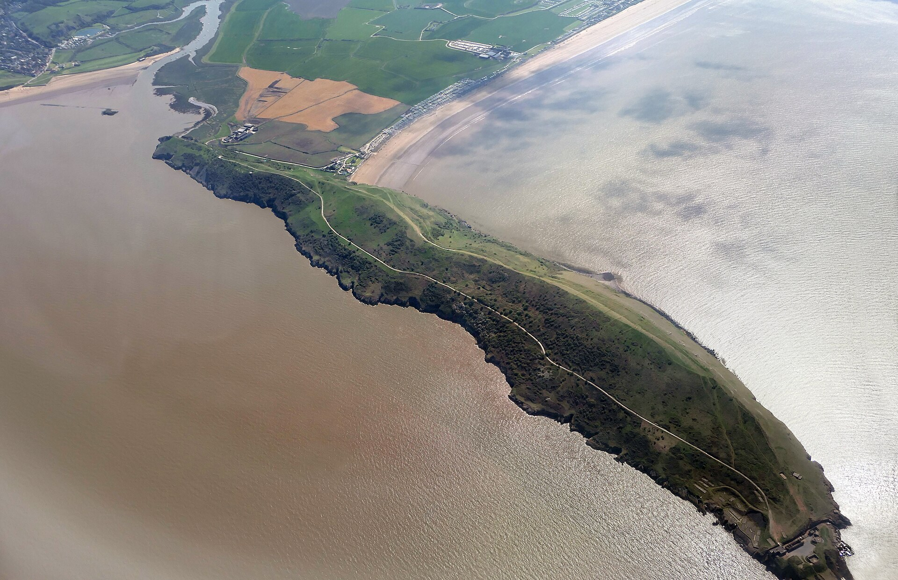
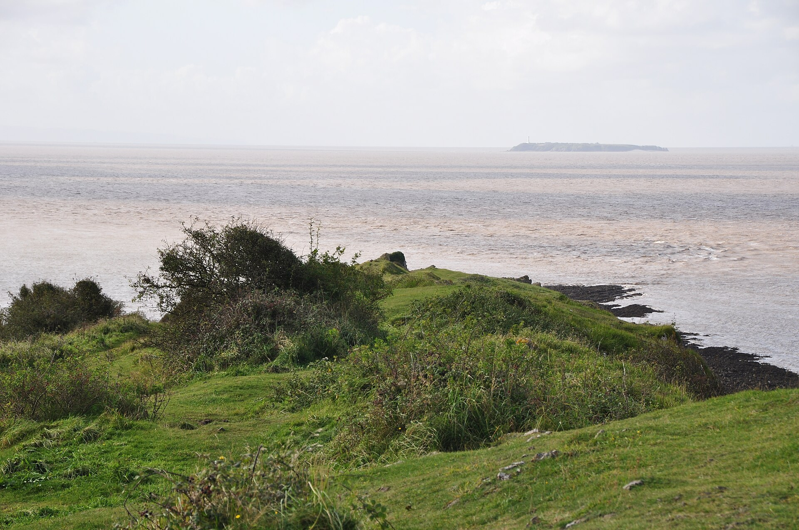
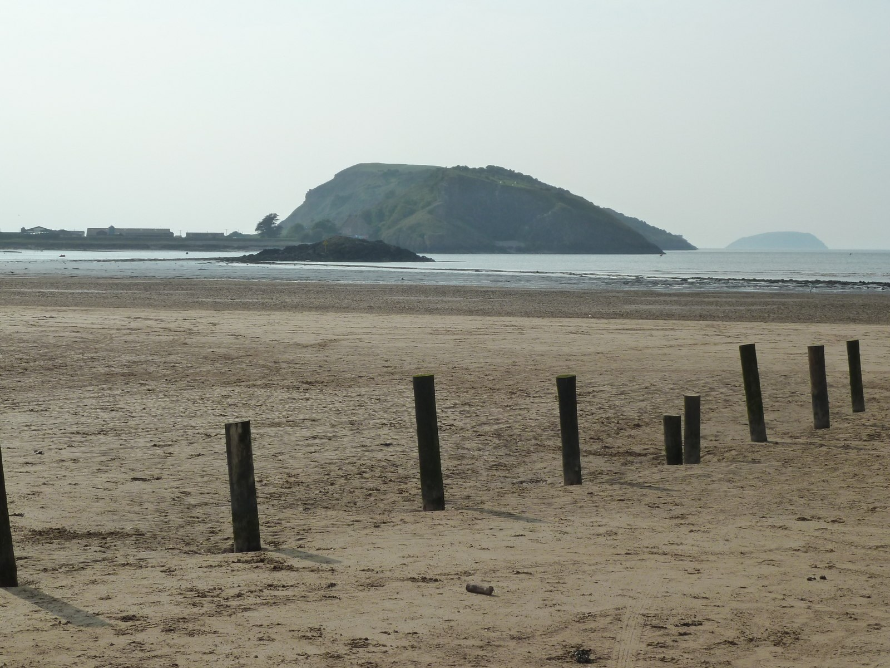
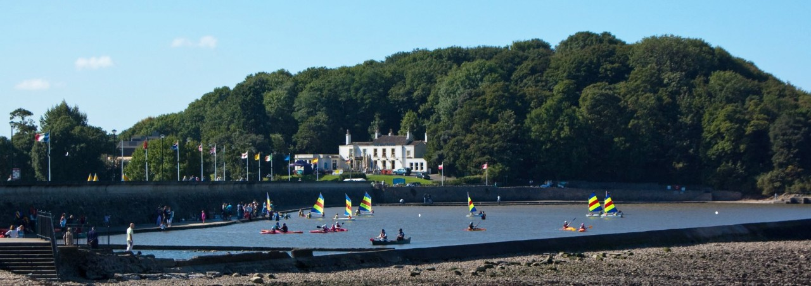

Coastal Walks
Battery Point, Portishead
Watch the estuary from a headland beside Portishead's seafront.

Sea air and wide horizons
Explore five real coastal outings, from Clevedon viewpoints to Somerset headlands. Choose a route that suits your family and the weather.
Explore placesExplore five real coastal outings, from Clevedon viewpoints to Somerset headlands. Choose a route that suits your family and the weather.
5 places to discover

Coastal Walks
Watch the estuary from a headland beside Portishead's seafront.

Coastal Walks
A climb onto a Somerset headland with sea views and a historic fort.
Coastal Walks
A hillside coastal walk above Marine Lake with views across the Bristol Channel.

Coastal Walks
An open coastal headland above Sand Bay, with rocky ground and far-reaching views.

Coastal Walks
Wide skies and an unhurried coastal outing at the southern end of Weston Bay.
Explore Clevedon
Clevedon’s coastal paths offer a wonderful mix of sea views, interesting landmarks and fresh air, making them perfect for family adventures. Stroll along the seafront, take in views of the iconic pier, spot wildlife and enjoy plenty of space for little legs to explore.
Whether you choose a gentle walk by the water or a longer wander along the coastline, this is a lovely place to slow down, enjoy the scenery and make happy memories together.

A little planning, a lovely day
Clevedon Pier, The Beach, Clevedon, BS21 7QU
Clevedon town centre has several public car parks within walking distance. The seafront promenade is mostly flat and suitable for buggies and scooters.
Directions from your locationExplore the waterfront, pause for a picnic and make a day of it.
← Back to parks and walks